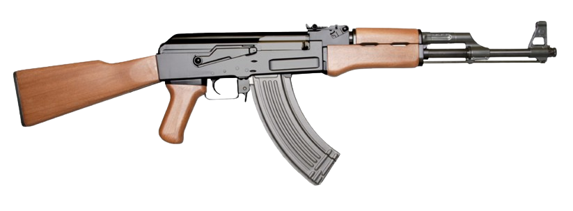

Rifle Kalashnikov Alado - Modelo: 47
A arma perfeita para o combate.
O AK-47 , oficialmente conhecido como Avtomat Kalashnikova ( em russo : Автомат Калашникова , literalmente 'rifle automático de Kalashnikov'; também conhecido como Kalashnikov ou apenas AK ), é um fuzil de assalto com câmara para o cartucho 7,62×39 mm .
Desenvolvido na União Soviética pelo projetista russo de armas de pequeno porte Mikhail Kalashnikov.
é a arma de fogo original da família de fuzis Kalashnikov (ou "AK").
Após mais de sete décadas desde sua criação, o modelo AK-47 e suas variantes continuam sendo uma das armas de fogo mais populares e amplamente utilizadas no mundo.
Крылатый автомат Калашникова
Крылатый автомат Калашникова
Крылатый автомат Калашникова
Крылатый автомат Калашникова
Крылатый автомат Калашникова
Крылатый автомат Калашникова

Крылатый автомат Калашникова
Крылатый автомат Калашникова
Крылатый автомат Калашникова
Крылатый автомат Калашникова
Крылатый автомат Калашникова
Крылатый автомат Калашникова
| Company |
Contact |
Country |
| Alfreds Futterkiste |
Maria Anders |
Germany |
| Centro comercial Moctezuma |
Francisco Chang |
Mexico |
| |
Roubaram a ak47 do menino lesioney |
| Entre em contato, numero: +55 (11) 4002-8922 |
| @neymarjr (lesioney) |